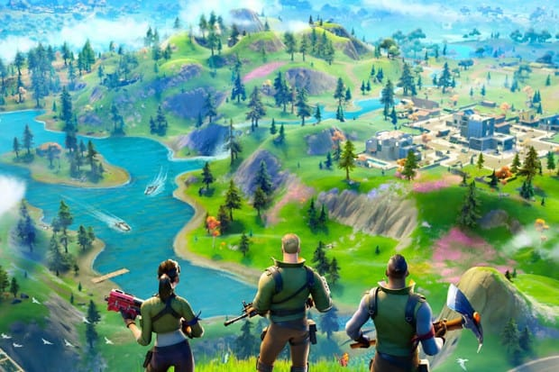
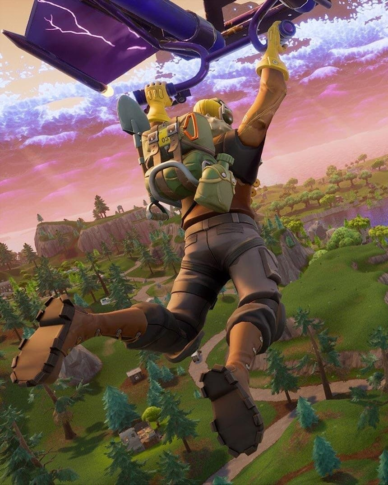
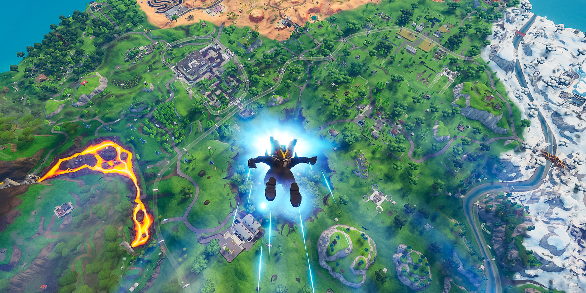
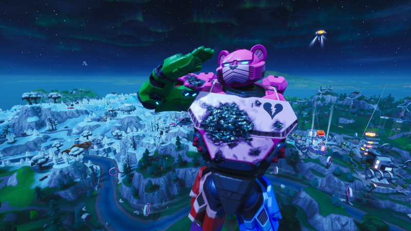
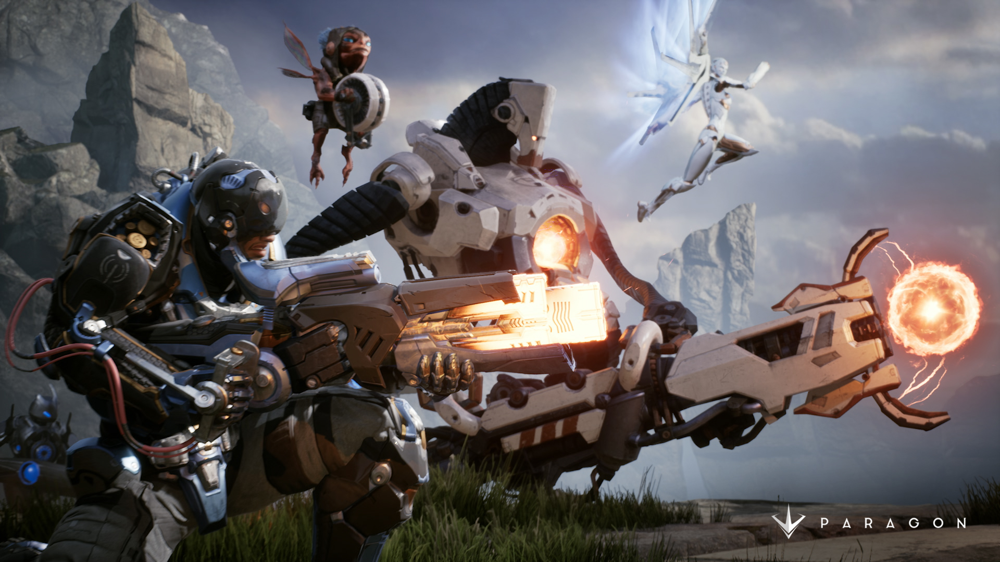
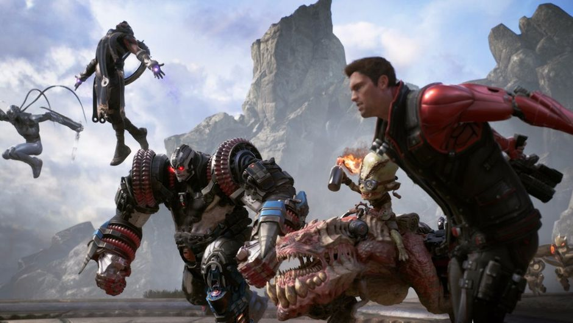

Games for Money: Fortnite's Success
And the Death of Paragon
The modern game industry has brought in massive amounts of profit for companies in recent years, and now the industry is very competitive and focused on making the most profit for the big companies that dominate the industry.
While ultimately the consumers decide what games succeed or fail, the hyper-competitive nature of the industry can cause games to burn out or just die. When Fortnite became the huge and very marketable success that it is now, it’s developers took full advantage of it, to the extent that another of their games was simply cancelled, they didn’t need it anymore.
Fortnite's rocket to success
You all have probably heard of Fortnite, the game that has rocketed to fame in the last few years, becoming a cultural phenomenon.
It was initially released in July of 2017, and it’s focus was meant to be the multiplayer zombie mode, that was the main feature of what you paid for, but the free to play battle-royal mode soon took off and became the focal point of the game. The game drew in over 125 Million players in less than a year (that is quite a lot) and earned hundreds of millions of dollars per month for the developer Epic Games.

But you may ask how did a free to play game earn millions? Well when Epic Games realized what a hit Fortnite’s battle royale was they were quick to capitalize on it, they added hundreds of purchasable cosmetics, gun skins, you name it they added it, but all of it could only be bought using V-bucks a currency that had to be directly bought with real world money.
The Free to play aspect of the game captured the attention of millions of players, and it became an instant hit especially with younger players, who spread it to all their friends. And inevitably they all wanted the newest skins and newest guns, cashing out more for every single skin Epic games released, and they kept churning them out. With major collaborations between Fortnite and Brands, Epic games managed to bring popular movie and tv characters into the game as skins, and fans went wild for it.
| Age range | 18-24 | 25-34 | 35-44 | 45-54 |
|---|---|---|---|---|
| Percentage of players | 62.7% | 22.5% | 12.7% | 2% |

Fortnite is built on a season system, so after every 10-12 weeks players were guaranteed new content, with innovative new maps and cosmetics dropping consistently it created a loop that kept bringing in new players and keeping old players hooked.
Fortnite is about to end it’s 5th Season of being active, it has made over $1.8 Billion in 2019 alone and it doesn’t seem to be slowing down. It has attracted the attention of the world, but it is a very divisive game, some love it and engage well with the model, but others find the game and culture around it annoying and toxic. A lot of people find the games microtransaction system controversial, enticing young players to buy more and more, Fortnite has even had it’s microtransactions blocked on the Apple Play and Google Play store.

But what cannot be denied is the success of Fortnite in the capitalistic video game industry, it has attracted major brands and companies to it, even hosting a massive virtual concert by Travis Scott. The game continues to rake in massive profit for Epic Games which has surged towards the top of the industry, but Fortnite is not without its controversies and negative effects.
Paragon's Downfall
Paragon was a less known game developed by Epic Games, released into early access in March of 2016. In comparison to Fortnite it was a very small game, but it had never gotten the chance to really take off. It was never officially released before it’s servers got shut down in 2018 during the height of Fortnite’s success.

Paragon was another free-to-play game like Fortnite is, but the genre differed greatly. Paragon was a MOBA (Multiplayer Online Battle Arena) which is very different from the battle royale style of Fortnite, it is much more of a niche genre than Fortnite was.
Paragon was a very highly rated game in it’s genre with a very new and innovative style, adding a modern twist to a genre full of older games.

Paragon was unfortunately shut down in 2018 by Epic Games, after the massive success of Fortnite outshadowed the much smaller game that Paragon was at the time, and the company as a whole valued profit over the ratings and views of it’s fans, thus ending the short life of Paragon.
Luckily for fans, all of Paragon's assets were released for others to use and there are multiple remakes of the game on the way, so luckily we will be able to enjoy it again.